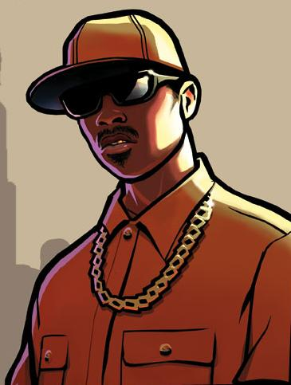

personajes
cj
ryder
Carl «CJ» Johnson es el protagonista ficticio del videojuego Grand Theft Auto: San Andreas interpretado por Young Maylay. Es también el primer protagonista negro de la saga de Grand Theft Auto. Mide 1.73 metros de estatura, y su corpulencia puede variar si el jugador decide personalizarlo
Sean "Sweet" Johnson es un personaje de la saga GTA que aparece en Grand Theft Auto: San Andreas, líder y fundador de la pandilla Families de Los Santos y hermano mayor de CJ, Brian Johnson y Kendl e hijo de la ya difunta Beverly Johnson
big smoke

sweet
Melvin "Big Smoke" Harris (? - 1992) es un personaje de la saga GTA que aparece en Grand Theft Auto: San Andreas como uno de los antagonistas principales. Smoke se caracteriza porque él ve las cosas de un modo diferente a Sweet; Sweet no tolera el tráfico de drogas, mientras que Big Smoke lo considera una buena manera de hacer dinero y realzar a la banda que se encuentra muy debilitada tras el año 1987
Sean "Sweet" Johnson es un personaje de la saga GTA que aparece en Grand Theft Auto: San Andreas, líder y fundador de la pandilla Families de Los Santos y hermano mayor de CJ, Brian Johnson y Kendl e hijo de la ya difunta Beverly Johnson.